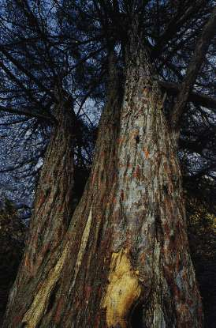
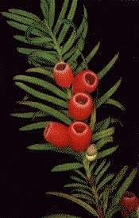

Sources of Taxol

The Pacific yew
Paclitaxel is extracted from the bark of the Pacific yew tree - (Taxus Brevifolia). This tree is also known as the Western yew and grows in moist soils in British Columbia. Alaska, California, Idaho, Montana, Oregon and Washington.
Like the familiar English yew, Taxus Brevifolia is an evergreen and bears flat, dark green needles (2 -3 cms long) that grow all around the stem. Rather than cones, yew trees produce bright-red berrylike fruits called arils - each cupping a central seed. The wood is hard, durable and elastic - the English yew is famous as the tree the English longbow was crafted from. The bark is thin, scaly and dark reddish or purplish. The tree grows slowly, taking at least a century to reach it’s adult height of 12 meters.(8)
The arils are the only part of the tree that is edible, being sweetish. All other parts of the tree carry poisonous taxines - the seeds in particular are deadly so it’s not a good idea to eat the arils!
Paclitaxel can be found in lessor concentration in a number of other yew species, such as the American yew (T. canadiensis) and the Japanese yew (T. cuspidata).
Drug Extraction
Extracting the drug, proved to be a major problem, with early research being hampered by a restricted supply. The concentration of the drug in yew bark is extremely low (about 100 ppm or 100 mg/kg) and the extraction process is complex and expensive. As clinical tests proved Paclitaxel’s effectiveness as an anticancer drug, so demand for it increased enormously. Unfortunately an average 100 year old tree, yields about 3 kg of bark and process obviously kills the tree. In addition, the Pacific yew seldom grows in strands but tends to grow scattered amongst other trees. As a result, it is very difficult to harvest and while it can be cultivated, it take a tree about a century to reach a harvestable size. To exacerbate the problem, bark collection has to be restricted because the Pacific yew is a limited resource (populations are in serious decline) located in old growth forests that are the habitat of the endangered spotted owl.(7)
As demand increased, the NCI along with other governmental agencies, moved to increase the rate of harvesting and the availability of Paclitaxel. But that was purely a short term solution. A typical course of treatment takes about 2 grams of Paclitaxel - the equivalent of about 6 trees. The 1.3 kg of the drug needed for preclinical and early clinical studies during the period 1976 - 1985, required between 2000 and 15000 pounds of bark per year. 1991 saw 1.6 million pounds of bark harvested to produce about 130 Kg of the drug. By 1992, better extraction process had increased that to 230 Kg for a similar harvest.
Processing the bark is complicated and time consuming. Collection of the bark was difficult and could only be done for part of the year, collecting and drying took several months. What followed was a 9 to 12 month process of extraction, solvent partitions, multiple chromatography and recrystallisation. Later formulation, packaging and quality control took a further 3 months.(1) + (9)
The present demand in the US for Paclitaxel, to treat ovarian cancer alone, exceeds 20 to 25 kg a year. With the potential use of the drug to treat other forms of cancer, this demand can only increase. The only solution to the problem is to find some other renewable source of the drug, as from 1995 bark harvesting is being phased out.
 Next
Page: Semi
Synthesis of Taxol- from yew needles
Next
Page: Semi
Synthesis of Taxol- from yew needles